SO 05 · Verde Slaný II
bytový dům, 2. etapa
3D model podle projektové dokumentace a areálové situace – ilustrační
Projít se odsud
Hotový dům
Hrubá stavba
Růst po podlažích
Podlaží
1. PP
1PP
1NP
2NP
3NP
4NP
5NP
hotovo
Projít se kolem domu
Noc
← Zpět na model
Noc
Otáčení jedním prstem · přiblížení dvěma prsty

VSTOUPIT DO BYTU
Typový byt 3+kk, 3. NP · 3D prohlídka
← Zpět ven
Načítám 3D model…